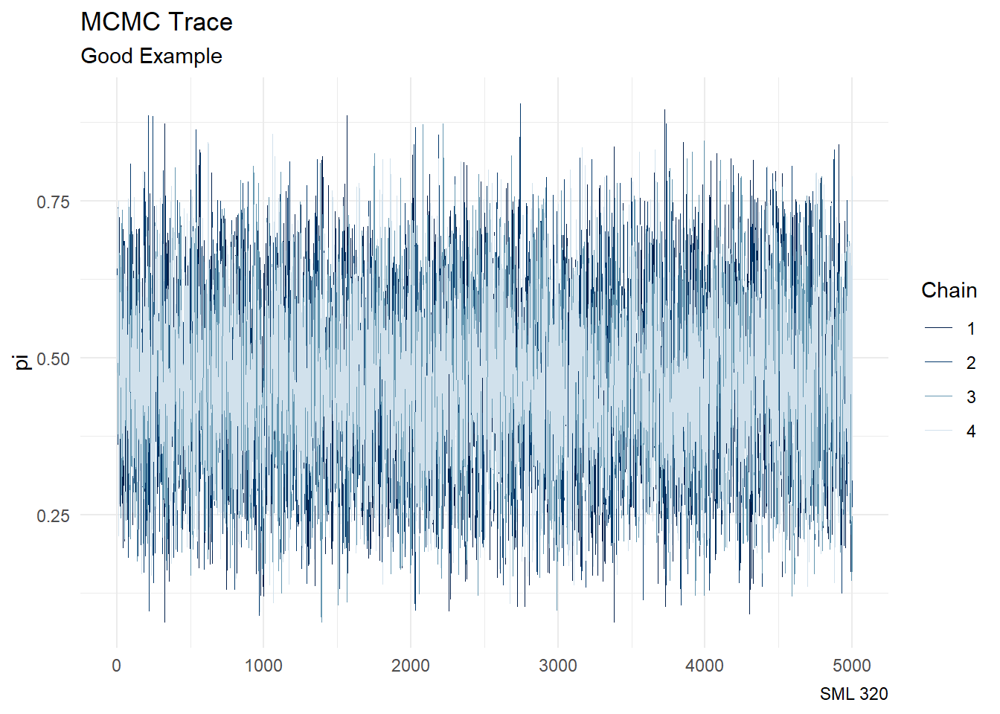
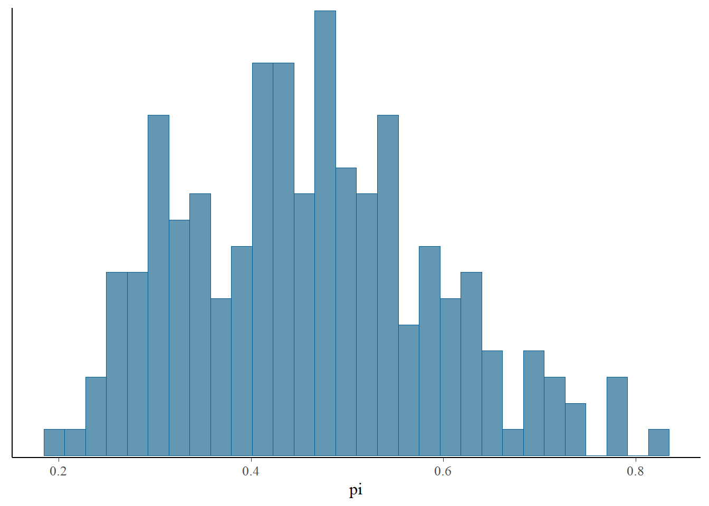
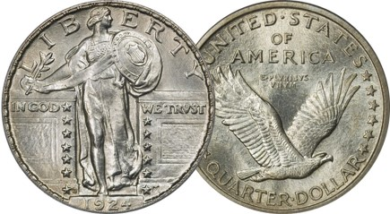

library("bayesplot")
library("ggtext")
library("rstan")
library("patchwork")
library("tidyverse")
knitr::opts_chunk$set(echo = TRUE)
# tips_df <- readr::read_csv("tips.csv")A Good Example
# STEP 1: DEFINE the model
bb_model <- "
data {
int<lower = 0, upper = 9> Y;
}
parameters {
real<lower = 0, upper = 1> pi;
}
model {
Y ~ binomial(9, pi);
pi ~ beta(2, 2);
}
"start_time <- Sys.time()
# STEP 2: SIMULATE the posterior
good_simulation <- stan(model_code = bb_model, data = list(Y = 4),
chains = 4, iter = 5000*2, seed = 84735)
SAMPLING FOR MODEL 'anon_model' NOW (CHAIN 1).
Chain 1:
Chain 1: Gradient evaluation took 1e-05 seconds
Chain 1: 1000 transitions using 10 leapfrog steps per transition would take 0.1 seconds.
Chain 1: Adjust your expectations accordingly!
Chain 1:
Chain 1:
Chain 1: Iteration: 1 / 10000 [ 0%] (Warmup)
Chain 1: Iteration: 1000 / 10000 [ 10%] (Warmup)
Chain 1: Iteration: 2000 / 10000 [ 20%] (Warmup)
Chain 1: Iteration: 3000 / 10000 [ 30%] (Warmup)
Chain 1: Iteration: 4000 / 10000 [ 40%] (Warmup)
Chain 1: Iteration: 5000 / 10000 [ 50%] (Warmup)
Chain 1: Iteration: 5001 / 10000 [ 50%] (Sampling)
Chain 1: Iteration: 6000 / 10000 [ 60%] (Sampling)
Chain 1: Iteration: 7000 / 10000 [ 70%] (Sampling)
Chain 1: Iteration: 8000 / 10000 [ 80%] (Sampling)
Chain 1: Iteration: 9000 / 10000 [ 90%] (Sampling)
Chain 1: Iteration: 10000 / 10000 [100%] (Sampling)
Chain 1:
Chain 1: Elapsed Time: 0.028 seconds (Warm-up)
Chain 1: 0.028 seconds (Sampling)
Chain 1: 0.056 seconds (Total)
Chain 1:
SAMPLING FOR MODEL 'anon_model' NOW (CHAIN 2).
Chain 2:
Chain 2: Gradient evaluation took 6e-06 seconds
Chain 2: 1000 transitions using 10 leapfrog steps per transition would take 0.06 seconds.
Chain 2: Adjust your expectations accordingly!
Chain 2:
Chain 2:
Chain 2: Iteration: 1 / 10000 [ 0%] (Warmup)
Chain 2: Iteration: 1000 / 10000 [ 10%] (Warmup)
Chain 2: Iteration: 2000 / 10000 [ 20%] (Warmup)
Chain 2: Iteration: 3000 / 10000 [ 30%] (Warmup)
Chain 2: Iteration: 4000 / 10000 [ 40%] (Warmup)
Chain 2: Iteration: 5000 / 10000 [ 50%] (Warmup)
Chain 2: Iteration: 5001 / 10000 [ 50%] (Sampling)
Chain 2: Iteration: 6000 / 10000 [ 60%] (Sampling)
Chain 2: Iteration: 7000 / 10000 [ 70%] (Sampling)
Chain 2: Iteration: 8000 / 10000 [ 80%] (Sampling)
Chain 2: Iteration: 9000 / 10000 [ 90%] (Sampling)
Chain 2: Iteration: 10000 / 10000 [100%] (Sampling)
Chain 2:
Chain 2: Elapsed Time: 0.028 seconds (Warm-up)
Chain 2: 0.03 seconds (Sampling)
Chain 2: 0.058 seconds (Total)
Chain 2:
SAMPLING FOR MODEL 'anon_model' NOW (CHAIN 3).
Chain 3:
Chain 3: Gradient evaluation took 1e-06 seconds
Chain 3: 1000 transitions using 10 leapfrog steps per transition would take 0.01 seconds.
Chain 3: Adjust your expectations accordingly!
Chain 3:
Chain 3:
Chain 3: Iteration: 1 / 10000 [ 0%] (Warmup)
Chain 3: Iteration: 1000 / 10000 [ 10%] (Warmup)
Chain 3: Iteration: 2000 / 10000 [ 20%] (Warmup)
Chain 3: Iteration: 3000 / 10000 [ 30%] (Warmup)
Chain 3: Iteration: 4000 / 10000 [ 40%] (Warmup)
Chain 3: Iteration: 5000 / 10000 [ 50%] (Warmup)
Chain 3: Iteration: 5001 / 10000 [ 50%] (Sampling)
Chain 3: Iteration: 6000 / 10000 [ 60%] (Sampling)
Chain 3: Iteration: 7000 / 10000 [ 70%] (Sampling)
Chain 3: Iteration: 8000 / 10000 [ 80%] (Sampling)
Chain 3: Iteration: 9000 / 10000 [ 90%] (Sampling)
Chain 3: Iteration: 10000 / 10000 [100%] (Sampling)
Chain 3:
Chain 3: Elapsed Time: 0.028 seconds (Warm-up)
Chain 3: 0.029 seconds (Sampling)
Chain 3: 0.057 seconds (Total)
Chain 3:
SAMPLING FOR MODEL 'anon_model' NOW (CHAIN 4).
Chain 4:
Chain 4: Gradient evaluation took 2e-06 seconds
Chain 4: 1000 transitions using 10 leapfrog steps per transition would take 0.02 seconds.
Chain 4: Adjust your expectations accordingly!
Chain 4:
Chain 4:
Chain 4: Iteration: 1 / 10000 [ 0%] (Warmup)
Chain 4: Iteration: 1000 / 10000 [ 10%] (Warmup)
Chain 4: Iteration: 2000 / 10000 [ 20%] (Warmup)
Chain 4: Iteration: 3000 / 10000 [ 30%] (Warmup)
Chain 4: Iteration: 4000 / 10000 [ 40%] (Warmup)
Chain 4: Iteration: 5000 / 10000 [ 50%] (Warmup)
Chain 4: Iteration: 5001 / 10000 [ 50%] (Sampling)
Chain 4: Iteration: 6000 / 10000 [ 60%] (Sampling)
Chain 4: Iteration: 7000 / 10000 [ 70%] (Sampling)
Chain 4: Iteration: 8000 / 10000 [ 80%] (Sampling)
Chain 4: Iteration: 9000 / 10000 [ 90%] (Sampling)
Chain 4: Iteration: 10000 / 10000 [100%] (Sampling)
Chain 4:
Chain 4: Elapsed Time: 0.028 seconds (Warm-up)
Chain 4: 0.03 seconds (Sampling)
Chain 4: 0.058 seconds (Total)
Chain 4: end_time <- Sys.time()
print(round(end_time- start_time))Time difference of 37 secsbayesplot::mcmc_hist(good_simulation, pars = "pi")
bayesplot::mcmc_dens(good_simulation, pars = "pi") +
stat_function(fun = dbeta, args = list(7, 8),
color = "#E77500", linewidth = 3) +
labs(title = "MCMC: <span style='color:#619CFF'>simulation</span> versus <span style='color:#E77500'>theoretical</span>",
subtitle = "Beta-Binomial Example",
caption = "SML 320") +
theme_minimal() +
theme(plot.title = element_markdown())
bayesplot::mcmc_trace(good_simulation, pars = "pi") +
labs(title = "MCMC Trace",
subtitle = "Good Example",
caption = "SML 320") +
theme_minimal() +
theme(plot.title = element_markdown())
A Bad Example
# STEP 1: DEFINE the model
bb_model <- "
data {
int<lower = 0, upper = 9> Y;
}
parameters {
real<lower = 0, upper = 1> pi;
}
model {
Y ~ binomial(9, pi);
pi ~ beta(2, 2);
}
"start_time <- Sys.time()
# STEP 2: SIMULATE the posterior
bad_simulation <- stan(model_code = bb_model, data = list(Y = 4),
chains = 4, iter = 50*2, seed = 84735)
SAMPLING FOR MODEL 'anon_model' NOW (CHAIN 1).
Chain 1:
Chain 1: Gradient evaluation took 3e-06 seconds
Chain 1: 1000 transitions using 10 leapfrog steps per transition would take 0.03 seconds.
Chain 1: Adjust your expectations accordingly!
Chain 1:
Chain 1:
Chain 1: WARNING: There aren't enough warmup iterations to fit the
Chain 1: three stages of adaptation as currently configured.
Chain 1: Reducing each adaptation stage to 15%/75%/10% of
Chain 1: the given number of warmup iterations:
Chain 1: init_buffer = 7
Chain 1: adapt_window = 38
Chain 1: term_buffer = 5
Chain 1:
Chain 1: Iteration: 1 / 100 [ 1%] (Warmup)
Chain 1: Iteration: 10 / 100 [ 10%] (Warmup)
Chain 1: Iteration: 20 / 100 [ 20%] (Warmup)
Chain 1: Iteration: 30 / 100 [ 30%] (Warmup)
Chain 1: Iteration: 40 / 100 [ 40%] (Warmup)
Chain 1: Iteration: 50 / 100 [ 50%] (Warmup)
Chain 1: Iteration: 51 / 100 [ 51%] (Sampling)
Chain 1: Iteration: 60 / 100 [ 60%] (Sampling)
Chain 1: Iteration: 70 / 100 [ 70%] (Sampling)
Chain 1: Iteration: 80 / 100 [ 80%] (Sampling)
Chain 1: Iteration: 90 / 100 [ 90%] (Sampling)
Chain 1: Iteration: 100 / 100 [100%] (Sampling)
Chain 1:
Chain 1: Elapsed Time: 0 seconds (Warm-up)
Chain 1: 0 seconds (Sampling)
Chain 1: 0 seconds (Total)
Chain 1:
SAMPLING FOR MODEL 'anon_model' NOW (CHAIN 2).
Chain 2:
Chain 2: Gradient evaluation took 1e-06 seconds
Chain 2: 1000 transitions using 10 leapfrog steps per transition would take 0.01 seconds.
Chain 2: Adjust your expectations accordingly!
Chain 2:
Chain 2:
Chain 2: WARNING: There aren't enough warmup iterations to fit the
Chain 2: three stages of adaptation as currently configured.
Chain 2: Reducing each adaptation stage to 15%/75%/10% of
Chain 2: the given number of warmup iterations:
Chain 2: init_buffer = 7
Chain 2: adapt_window = 38
Chain 2: term_buffer = 5
Chain 2:
Chain 2: Iteration: 1 / 100 [ 1%] (Warmup)
Chain 2: Iteration: 10 / 100 [ 10%] (Warmup)
Chain 2: Iteration: 20 / 100 [ 20%] (Warmup)
Chain 2: Iteration: 30 / 100 [ 30%] (Warmup)
Chain 2: Iteration: 40 / 100 [ 40%] (Warmup)
Chain 2: Iteration: 50 / 100 [ 50%] (Warmup)
Chain 2: Iteration: 51 / 100 [ 51%] (Sampling)
Chain 2: Iteration: 60 / 100 [ 60%] (Sampling)
Chain 2: Iteration: 70 / 100 [ 70%] (Sampling)
Chain 2: Iteration: 80 / 100 [ 80%] (Sampling)
Chain 2: Iteration: 90 / 100 [ 90%] (Sampling)
Chain 2: Iteration: 100 / 100 [100%] (Sampling)
Chain 2:
Chain 2: Elapsed Time: 0 seconds (Warm-up)
Chain 2: 0 seconds (Sampling)
Chain 2: 0 seconds (Total)
Chain 2:
SAMPLING FOR MODEL 'anon_model' NOW (CHAIN 3).
Chain 3:
Chain 3: Gradient evaluation took 1e-06 seconds
Chain 3: 1000 transitions using 10 leapfrog steps per transition would take 0.01 seconds.
Chain 3: Adjust your expectations accordingly!
Chain 3:
Chain 3:
Chain 3: WARNING: There aren't enough warmup iterations to fit the
Chain 3: three stages of adaptation as currently configured.
Chain 3: Reducing each adaptation stage to 15%/75%/10% of
Chain 3: the given number of warmup iterations:
Chain 3: init_buffer = 7
Chain 3: adapt_window = 38
Chain 3: term_buffer = 5
Chain 3:
Chain 3: Iteration: 1 / 100 [ 1%] (Warmup)
Chain 3: Iteration: 10 / 100 [ 10%] (Warmup)
Chain 3: Iteration: 20 / 100 [ 20%] (Warmup)
Chain 3: Iteration: 30 / 100 [ 30%] (Warmup)
Chain 3: Iteration: 40 / 100 [ 40%] (Warmup)
Chain 3: Iteration: 50 / 100 [ 50%] (Warmup)
Chain 3: Iteration: 51 / 100 [ 51%] (Sampling)
Chain 3: Iteration: 60 / 100 [ 60%] (Sampling)
Chain 3: Iteration: 70 / 100 [ 70%] (Sampling)
Chain 3: Iteration: 80 / 100 [ 80%] (Sampling)
Chain 3: Iteration: 90 / 100 [ 90%] (Sampling)
Chain 3: Iteration: 100 / 100 [100%] (Sampling)
Chain 3:
Chain 3: Elapsed Time: 0 seconds (Warm-up)
Chain 3: 0 seconds (Sampling)
Chain 3: 0 seconds (Total)
Chain 3:
SAMPLING FOR MODEL 'anon_model' NOW (CHAIN 4).
Chain 4:
Chain 4: Gradient evaluation took 1e-06 seconds
Chain 4: 1000 transitions using 10 leapfrog steps per transition would take 0.01 seconds.
Chain 4: Adjust your expectations accordingly!
Chain 4:
Chain 4:
Chain 4: WARNING: There aren't enough warmup iterations to fit the
Chain 4: three stages of adaptation as currently configured.
Chain 4: Reducing each adaptation stage to 15%/75%/10% of
Chain 4: the given number of warmup iterations:
Chain 4: init_buffer = 7
Chain 4: adapt_window = 38
Chain 4: term_buffer = 5
Chain 4:
Chain 4: Iteration: 1 / 100 [ 1%] (Warmup)
Chain 4: Iteration: 10 / 100 [ 10%] (Warmup)
Chain 4: Iteration: 20 / 100 [ 20%] (Warmup)
Chain 4: Iteration: 30 / 100 [ 30%] (Warmup)
Chain 4: Iteration: 40 / 100 [ 40%] (Warmup)
Chain 4: Iteration: 50 / 100 [ 50%] (Warmup)
Chain 4: Iteration: 51 / 100 [ 51%] (Sampling)
Chain 4: Iteration: 60 / 100 [ 60%] (Sampling)
Chain 4: Iteration: 70 / 100 [ 70%] (Sampling)
Chain 4: Iteration: 80 / 100 [ 80%] (Sampling)
Chain 4: Iteration: 90 / 100 [ 90%] (Sampling)
Chain 4: Iteration: 100 / 100 [100%] (Sampling)
Chain 4:
Chain 4: Elapsed Time: 0 seconds (Warm-up)
Chain 4: 0 seconds (Sampling)
Chain 4: 0 seconds (Total)
Chain 4: end_time <- Sys.time()
print(round(end_time- start_time))Time difference of 0 secsbayesplot::mcmc_hist(bad_simulation, pars = "pi")
bayesplot::mcmc_dens(bad_simulation, pars = "pi") +
stat_function(fun = dbeta, args = list(7, 8),
color = "#E77500", linewidth = 3) +
labs(title = "MCMC: <span style='color:#619CFF'>simulation</span> versus <span style='color:#E77500'>theoretical</span>",
subtitle = "Beta-Binomial Example",
caption = "SML 320") +
theme_minimal() +
theme(plot.title = element_markdown())
bayesplot::mcmc_trace(bad_simulation, pars = "pi") +
labs(title = "MCMC Trace",
subtitle = "Bad Example",
caption = "SML 320") +
theme_minimal() +
theme(plot.title = element_markdown())Coins
- German mathematician
- 1654 - 1705
- Ars Conjectandi published 1713
- brother: Daniel Bernoulli
Image source: Mathematical Association of America

Image source: Liberty Coin and Currency
\[P(H) = 0.50\] \[P(T) = 0.50\]

k <- 0:2
f_k <- dbinom(k, 2, 0.5)
two_coin_plot <- data.frame(k, f_k) |>
ggplot(aes(x = k, y = f_k)) +
geom_bar(color = "black", fill = "#E77500", stat = "identity") +
labs(title = "2 Coins", subtitle = "fair coin", caption = "SML 320", x = "heads", y = "probability") +
theme_minimal()
k <- 0:3
f_k <- dbinom(k, 3, 0.5)
three_coin_plot <- data.frame(k, f_k) |>
ggplot(aes(x = k, y = f_k)) +
geom_bar(color = "black", fill = "#E77500", stat = "identity") +
labs(title = "3 Coins", subtitle = "fair coin", caption = "SML 320", x = "heads", y = "probability") +
theme_minimal()
k <- 0:4
f_k <- dbinom(k, 4, 0.5)
four_coin_plot <- data.frame(k, f_k) |>
ggplot(aes(x = k, y = f_k)) +
geom_bar(color = "black", fill = "#E77500", stat = "identity") +
labs(title = "4 Coins", subtitle = "fair coin", caption = "SML 320", x = "heads", y = "probability") +
theme_minimal()
k <- 0:5
f_k <- dbinom(k, 5, 0.5)
five_coin_plot <- data.frame(k, f_k) |>
ggplot(aes(x = k, y = f_k)) +
geom_bar(color = "black", fill = "#E77500", stat = "identity") +
labs(title = "5 Coins", subtitle = "fair coin", caption = "SML 320", x = "heads", y = "probability") +
theme_minimal()

Let random variable \(Y\) be the number of successes in a fixed number of trials \(n\). Assume that the trials are independent and that the probability of success in each trial is \(\pi\). Then the conditional dependence of \(Y\) on \(\pi\) can be modeled by the Binomial model with parameters \(n\) and \(\pi\). In mathematical notation:
\[Y|\pi \sim \text{Bin}(n,\pi)\] where \(\sim\) can be read as modeled by. Correspondingly, the binomial model is specified by the conditional pmf
\[f(y|\pi) = \binom{n}{y}\pi^{y}(1-\pi)^{n-y} \text{ for } y \in \{0, 1, 2, ..., n\}\] where \(\binom{n}{y} = \displaystyle\frac{n!}{y!(n-y)!}\)
Random Walks
A random walk is a random process where we start at \(x = 0\) on a one-dimensional number line, and then
- go left: \(f(X = -1) = 0.50\)
- go right: \(f(X = 1) = 0.50\)
(and then repeat the step many times)
A random walk is a random process where we start at \(x = 0\) on a two-dimensional Cartesian plane, and then
- go left: \(f(X = -1, Y = 0) = 0.25\)
- go right: \(f(X = 1, Y = 0) = 0.25\)
- go up: \(f(X = 0, Y = 1) = 0.25\)
- go down: \(f(X = 0, Y = -1) 0.25\)
(and then repeat the step many times)
Image Source: Research Gate
Image Source: The Koga
Going on Tour
Metropolis-Hastings
Using the analogy from the Bayes Rules! textbook, As tour manager, you can automate the tour route using the Metropolis-Hastings algorithm. This algorithm iterates through a two-step process. Assuming the Markov chain is at location \(\mu(i)=\mu\) at iteration or tour stop \(i\), the next tour stop \(\mu(i+1)\) is selected as follows:
Step 1: Propose a random location, \(\mu^{}\), for the next tour stop.
Step 2: Decide whether to
- to to the proposed location \[\mu(i+1)=\mu^{}\]
- or to stay at the current location for another iteration \[\mu(i+1)=\mu\]
Monte Carlo
If we know the posterior distribution, this special case of the Metropolis-Hastings algorithm has a special name
Monte Carlo algorithm
To construct an independent Monte Carlo sample directly from posterior pdf \(f(\mu|y)\), \[\{\mu^{(1)},\mu^{(2)},...,\mu^{(N)}\}\]
select each tour stop \(\mu^{(i)}=\mu\)
as follows:
- Step 1: Propose a location. Draw a location from the posterior model with pdf \(f(\mu|y)\)
- Step 2: Go there.
Generalizing
- we only need MCMC to approximate a Bayesian posterior when that posterior is too complicated to specify
- if a posterior is too complicated to specify, its typically too complicated to directly sample or draw from as we did in our Monte Carlo tour above
- Metropolis-Hastings relies on the fact that, even if we dont know the posterior model, we do know that the posterior pdf is proportional to the product of the known prior pdf and likelihood function
\[f(\mu|y) \propto f(\mu) \cdot L(\mu|y)\]
Metropolis-Hastings Algorithm
Nicholas Metropolis
- PhD: University of Chicago
- Recruited by Oppenheimer
- Team included von Neumann and Ulam
Image Source: Nuclear Museum
Wilfred Hastings
- PhD: University of Toronto
- Bell Labs (New Jersey)
- generalized Metropolis algorithm and MCMC
Image Source: McCall Gardens
Rosenbluths
Arianna Rosenbluth
- PhD: Harvard University
- qualified for Olympics (fencing)
- wrote first MCMC algorithm
Marshall Rosenbluth
- PhD: University of Chicago
- WWII veteran (navy)
Image Source: Los Alamos National Laboratories
Uniform proposal model
Let \(\mu^{(i)} = \mu\) denote the current tour location with \(w\) being a half-width distance:
- random draw: \(\mu^{'}|\mu \sim \text{Unif}(\mu - w, \mu + w)\)
- pdf: \(q(\mu^{'}|\mu) = \displaystyle\frac{1}{2w} \text{ for } \mu^{'} \in [(\mu - w, \mu + w]\)
Rejected Ideas
- Never accept the proposed location.
- Always accept the proposed location.
- Only accept the proposed location if its (unnormalized) posterior plausibility is greater than that of the current location.
Main Idea
Step 1: Propose a location, \(\mu^{'}\), for the next tour stop by taking a draw from a proposal model.
Step 2: Decide whether to go to the proposed location (\(^{(i+1)}=\mu^{'}\)) or to stay at the current location for another iteration (\(^{(i+1)}=\mu\)) as follows.
- If the (unnormalized) posterior plausibility of the proposed location \(\mu^{'}\) is greater than that of the current location \(\mu\), \[f(\mu^{'})L(\mu^{'}|y)>f(\mu)L(\mu|y)\] definitely go there.
- Otherwise, maybe go there.
Definition
Metropolis-Hastings algorithm
Conditioned on data \(y\), let parameter \(\mu\) have posterior pdf \[f(\mu|y)\propto f(\mu) \cdot L(\mu|y)\] A Metropolis-Hastings Markov chain for \(f(\mu|y)\), \(\{\mu^{(1)},\mu^{(2)},...,\mu^{(N)}\}\), evolves as follows. Let \(\mu^{(i)}=\mu\) be the chains location at iteration \(i\in\{1,2,...,N1\}\) and identify the next location \(\mu^{(i+1)}\) through a two-step process:
Step 1: Propose a new location. Conditioned on the current location \(\mu\), draw a location \(\mu^{}\) from a proposal model with pdf \(q(\mu^{}|\mu)\).
Step 2: Decide whether or not to go there.
- Calculate the acceptance probability (i.e., the probability of accepting the proposal \(\mu^{}\)): \[\alpha = \text{min}\left\{1, \displaystyle\frac{f(\mu^{}) \cdot L(\mu^{}|y)}{f(\mu) \cdot L(\mu|y)} \cdot \displaystyle\frac{q(\mu^{}|\mu)}{q(\mu|\mu^{})} \right\}\]
- Figuratively, flip a weighted coin. If its Heads, with probability \(\alpha\), go to the proposed location \(\mu^{}\). If its Tails, with probability \(1\alpha\), stay at \(\mu\): \[\mu^{(i+1)} = \begin{cases} \mu^{'} & \text{with probability } \alpha \\ \mu & \text{with probability } 1-\alpha \\ \end{cases}\]
Symmetric Proposal
What happens if we have a symmetric proposal model? For instance,
\[\mu^{'}|\mu \sim \text{Unif}(\mu - w, \mu + w)\]
leads to the probability density function
\[q(\mu^{}|\mu) = q(\mu|\mu^{}) = \begin{cases} \frac{1}{2w}, & |\mu - \mu^{'}| < w \\ 0, & \text{otherwise} \\ \end{cases}\]
Metropolis Algorithm
Metropolis Algorithm
The Metropolis algorithm is a special case of the Metropolis-Hastings in which the proposal model is symmetric. That is, the chance of proposing a move to \(\mu^{}\) from \(\mu\) is equal to that of proposing a move to \(\mu\) from \(\mu^{}\): \[q(\mu^{}|\mu) = q(\mu|\mu^{})\]
The acceptance probability simplifies to \[\alpha = \text{min}\left\{1, \displaystyle\frac{f(\mu^{}) \cdot L(\mu^{}|y)}{f(\mu) \cdot L(\mu|y)} \right\}\]
Bayesian Ratio
By dividing both the numerator and denominator by \(f(y)\)
\[\alpha = \text{min}\left\{1, \displaystyle\frac{f(\mu^{}) \cdot L(\mu^{}|y) / f(y)}{f(\mu) \cdot L(\mu|y) / f(y)} \right\} = \text{min}\left\{1, \displaystyle\frac{f(\mu^{'}|y)}{f(\mu|y)} \right\}\]
This rewrite emphasizes that, though we cant calculate the posterior pdfs of \(\mu^{}\) and \(\mu\), \(f(\mu^{'}|y)\) and \(f(\mu|y)\), their ratio is equivalent to that of the unnormalized posterior pdfs (which we can calculate)
Tour Decisions
Thus, the probability of accepting a move from a current location \(\mu\) to a proposed location \(\mu^{}\) comes down to a comparison of their posterior plausibility: \(f(\mu^{'}|y)\) versus \(f(\mu|y)\). There are two possible scenarios here:
- Scenario 1: \(f(\mu^{'}|y) \geq f(\mu|y)\). When the posterior plausibility of \(\mu^{}\) is at least as great as that of \(\mu\), \(\alpha=1\). Thus, well definitely move there.
- Scenario 2: \(f(\mu^{'}|y) < f(\mu|y)\). If the posterior plausibility of \(\mu^{}\) is less than that of \(\mu\), then
\[=\displaystyle\frac{f(\mu^{}|y)}{f(\mu|y)}<1\]
Thus, we might move there.
Near
Further, \(\alpha\) approaches 1 as \(f(\mu^{'}|y)\) nears \(f(\mu|y)\). That is, the probability of accepting the proposal increases with the plausibility of \(\mu^{}\) relative to \(\mu\).
Metropolis-Hastings Implementation
Detailed Account
start location: \(\mu^{(0)} = 3\)
half-width: \(w = 0.5\)
normal-normal model:
- prior: \(\mu \sim \text{N}(3, 0.50^2)\)
- likelihood: \(Y|\mu \sim \text{N}(\mu, 0.75^2)\)
observed value: \(y = 3.20\)
set.seed(20240220)
current <- 3
proposal <- runif(1, min = current - 1, max = current + 1)
print(paste0("The proposed value is: ", proposal))[1] "The proposed value is: 2.8043764475733"proposal_plausibility <- dnorm(proposal, 3, 0.5) * dnorm(3.20, proposal, 0.75)
print(paste0("The proposed plausibility is: ", proposal_plausibility))[1] "The proposed plausibility is: 0.342079515048734"current_plausibility <- dnorm(current, 3, 0.5) * dnorm(3.20, current, 0.75)
print(paste0("The current plausibility is: ", current_plausibility))[1] "The current plausibility is: 0.409588054724166"alpha <- min(1, proposal_plausibility / current_plausibility)
print(paste0("The acceptance probability is: ", alpha))[1] "The acceptance probability is: 0.835179422600849"Helper Function
one_mh_iteration <- function(current, w, obs_value, tau, sigma){
# Step 1: propose next location in chain
proposal <- runif(1, min = current - w, current + w)
# Step 2: decide whether or not to go there
proposal_plausibility <- dnorm(proposal, 3, tau) * dnorm(obs_value, proposal, sigma)
current_plausibility <- dnorm(current, 3, tau) * dnorm(obs_value, current, sigma)
alpha <- min(1, proposal_plausibility / current_plausibility)
next_stop <- sample(c(proposal, current),
size = 1, prob = c(alpha, 1 - alpha))
# Return the results as a data frame
return(data.frame(proposal, alpha, next_stop))
}set.seed(1)
one_mh_iteration(current = 3, w = 0.5,
obs_value = 3.20, tau = 0.75, sigma = 0.50) proposal alpha next_stop
1 2.765509 0.7071998 2.765509set.seed(4)
one_mh_iteration(current = 3, w = 0.5,
obs_value = 3.20, tau = 0.75, sigma = 0.50) proposal alpha next_stop
1 3.0858 1 3.0858set.seed(5)
one_mh_iteration(current = 3, w = 0.5,
obs_value = 3.20, tau = 0.75, sigma = 0.50) proposal alpha next_stop
1 2.700214 0.6068602 3For Loop
mh_tour <- function(N, current, w, obs_value, tau, sigma){
# N: chain length
# initialize vector
mu <- rep(0, N)
# simulate N Markov chain stops
for(i in 1:N){
# simulate one iteration
this_iteration <- one_mh_iteration(current, w, obs_value, tau, sigma)
# record next location
mu[i] <- this_iteration$next_stop
# update current location
current <- this_iteration$next_stop
}
# return the chain locations
return(data.frame(iteration = c(1:N), mu))
}Go on Tour!
our_mh_tour <- mh_tour(N = 5000, current = 3, w = 1,
obs_value = 3.20, tau = 0.50, sigma = 0.75)Metrics
How do we know if our MCMC chain is reliable?
Traces
Our Metropolis-Hastings Tour
From our knowledge of the Normal-Normal model,
bayesrules::summarize_normal_normal(
# from prior
mean = 3, sd = 0.50,
# from observations
y_bar = 3.20, sigma = 0.75, n = 1
) |>
mutate_if(is.numeric, round, digits = 4) model mean mode var sd
1 prior 3.0000 3.0000 0.2500 0.500
2 posterior 3.0615 3.0615 0.1731 0.416we should have a \(\text{N}(3.0615, 0.4160^2)\) posterior distribution
p1 <- ggplot(our_mh_tour, aes(x = iteration, y = mu)) +
geom_line() +
labs(title = "Our Metropolis-Hastings Tour",
subtitle = "Posterior: N(3.0615, 0.4160^2)",
caption = "SML 320") +
theme_minimal()
p2 <- ggplot(our_mh_tour, aes(x = mu)) +
geom_histogram(aes(y = after_stat(density)),
binwidth = 0.1,
color = "black", fill = "gray50") +
stat_function(fun = dnorm, args = list(3.0615, 0.4160),
color = "#E77500",
linewidth = 2) +
theme_minimal()
# patchwork
p1 + p2Bad Examples

Image Source: [Bayes Rules!](https://www.bayesrulesbook.com/chapter-6#diagnostics
Density Overlay
p1 <- mcmc_dens_overlay(bad_simulation, pars = "pi") +
labs(title = "Density Overlay",
subtitle = "bad simulation",
caption = "SML 320",
y = "density") +
theme_minimal() +
theme(legend.position = "none")
p2 <- mcmc_dens_overlay(good_simulation, pars = "pi") +
labs(title = "Density Overlay",
subtitle = "good simulation",
caption = "SML 320",
y = "density") +
theme_minimal()
# patchwork
p1 + p2Footnotes
Legacy
The Metropolis-Hastings algorithm appeared in a top-ten list called the greatest influence on the development and practice of science and engineering in the 20th century.
Music Recommendation
Should I Stay or Should I Go by The Clash
Session Info
sessionInfo()R version 4.3.0 (2023-04-21 ucrt)
Platform: x86_64-w64-mingw32/x64 (64-bit)
Running under: Windows 10 x64 (build 19045)
Matrix products: default
locale:
[1] LC_COLLATE=English_United States.utf8
[2] LC_CTYPE=English_United States.utf8
[3] LC_MONETARY=English_United States.utf8
[4] LC_NUMERIC=C
[5] LC_TIME=English_United States.utf8
time zone: America/New_York
tzcode source: internal
attached base packages:
[1] stats graphics grDevices utils datasets methods base
other attached packages:
[1] lubridate_1.9.2 forcats_1.0.0 stringr_1.5.0 dplyr_1.1.3
[5] purrr_1.0.2 readr_2.1.4 tidyr_1.3.0 tibble_3.2.1
[9] ggplot2_3.4.3 tidyverse_2.0.0 patchwork_1.1.2 rstan_2.32.5
[13] StanHeaders_2.32.5 ggtext_0.1.2 bayesplot_1.10.0
loaded via a namespace (and not attached):
[1] gridExtra_2.3 inline_0.3.19 rlang_1.1.1
[4] magrittr_2.0.3 snakecase_0.11.0 matrixStats_1.0.0
[7] e1071_1.7-13 compiler_4.3.0 loo_2.6.0
[10] callr_3.7.3 vctrs_0.6.3 reshape2_1.4.4
[13] pkgconfig_2.0.3 crayon_1.5.2 fastmap_1.1.1
[16] backports_1.4.1 ellipsis_0.3.2 labeling_0.4.3
[19] utf8_1.2.3 threejs_0.3.3 promises_1.2.1
[22] rmarkdown_2.24 markdown_1.8 tzdb_0.4.0
[25] nloptr_2.0.3 ps_1.7.5 xfun_0.40
[28] jsonlite_1.8.7 later_1.3.1 parallel_4.3.0
[31] prettyunits_1.1.1 R6_2.5.1 dygraphs_1.1.1.6
[34] stringi_1.7.12 boot_1.3-28.1 Rcpp_1.0.11
[37] knitr_1.43 zoo_1.8-12 base64enc_0.1-3
[40] splines_4.3.0 Matrix_1.5-4 igraph_1.4.3
[43] httpuv_1.6.11 timechange_0.2.0 tidyselect_1.2.0
[46] rstudioapi_0.15.0 abind_1.4-5 yaml_2.3.7
[49] miniUI_0.1.1.1 codetools_0.2-19 curl_5.0.2
[52] processx_3.8.1 pkgbuild_1.4.0 lattice_0.21-8
[55] plyr_1.8.8 shiny_1.7.5 withr_2.5.2
[58] groupdata2_2.0.2 posterior_1.4.1 evaluate_0.21
[61] survival_3.5-5 proxy_0.4-27 RcppParallel_5.1.7
[64] xts_0.13.1 xml2_1.3.5 pillar_1.9.0
[67] tensorA_0.36.2 DT_0.28 checkmate_2.2.0
[70] stats4_4.3.0 shinyjs_2.1.0 distributional_0.3.2
[73] generics_0.1.3 hms_1.1.3 rstantools_2.3.1
[76] munsell_0.5.0 commonmark_1.9.0 scales_1.2.1
[79] minqa_1.2.5 gtools_3.9.4 xtable_1.8-4
[82] class_7.3-21 glue_1.6.2 janitor_2.2.0
[85] tools_4.3.0 shinystan_2.6.0 lme4_1.1-33
[88] colourpicker_1.2.0 bayesrules_0.0.2 grid_4.3.0
[91] crosstalk_1.2.0 QuickJSR_1.1.3 colorspace_2.1-0
[94] nlme_3.1-162 cli_3.6.1 fansi_1.0.4
[97] V8_4.3.0 gtable_0.3.4 digest_0.6.33
[100] htmlwidgets_1.6.2 farver_2.1.1 htmltools_0.5.6
[103] lifecycle_1.0.4 mime_0.12 rstanarm_2.21.4
[106] MASS_7.3-58.4 shinythemes_1.2.0 gridtext_0.1.5